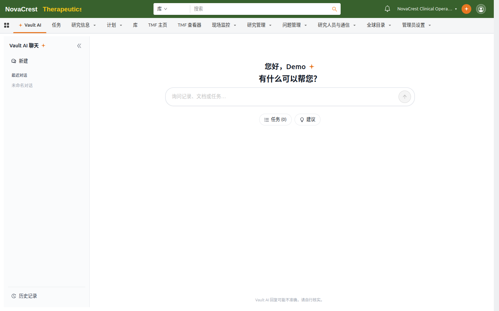

什么是 Vault AI
Vault AI 是内置于 Vivarcus 的 AI 助手，可以直接读写当前 Vault 的数据——研究、文档、任务、人员与组织——并用自然语言回答你的问题。与其在列表和详情页之间来回切换，你可以直接提问，例如"这个库有哪些研究？""查找最近 7 天更新的文档"。
Vault AI 的能力包括：
- 查询与回答：按你的问题查询 Vault 数据（研究、文档、任务等），并以带记录卡片的自然语言回答，可一键打开相关记录列表。
- 记录摘要：打开任意记录后，一键生成结构化摘要（编号、状态、里程碑、待办等）。
- 记录翻译：将记录内容翻译成其他语言。
- 上下文对话：在特定记录上开启对话，问答围绕该记录展开。
- 任务执行：在管理员开启工作流任务执行的 Vault 中，可让 Vault AI 完成授权的操作任务。
两个入口
| 入口 | 位置 | 用途 |
|---|---|---|
| Vault AI 标签页 | 应用程序选项卡栏的 Vault AI Tab | 全屏对话：浏览历史、发起新对话、查看任务执行状态 |
| Vault AI 聊天按钮 | 页头右上角（通知旁） | 浮动面板：不离开当前页面即可快速提问 |
页头按钮打开的浮动面板会感知当前上下文：没有打开记录时提示"打开一条记录以与 Vault AI 对话"；在记录详情页打开时，面板自动切换到该记录的专属对话。详见 在记录上下文中使用 Vault AI。

*Vault AI 标签页：左侧栏管理对话，中间输入框直接提问。*
安全与边界
- 权限一致：Vault AI 以你的身份查询数据，只会返回你有权查看的记录。
- 需管理员启用：Vault AI 默认由管理员在 Vault AI 设置中启用；未启用的 Vault 中看不到入口。
- 回复需核实：AI 回复可能不准确或已过期，页面底部的"Vault AI 回复可能不准确，请自行核实"提示始终生效。关键数据请以记录详情页为准。
开始使用
- 点击应用程序选项卡中的 Vault AI，或在任意页面点击页头 Vault AI 聊天 按钮。
- 在输入框输入问题，或点击 建议 查看示例问题。
- 回答中的 记录卡片 可点击"打开"跳转到记录列表。
下一步：与 Vault AI 对话。